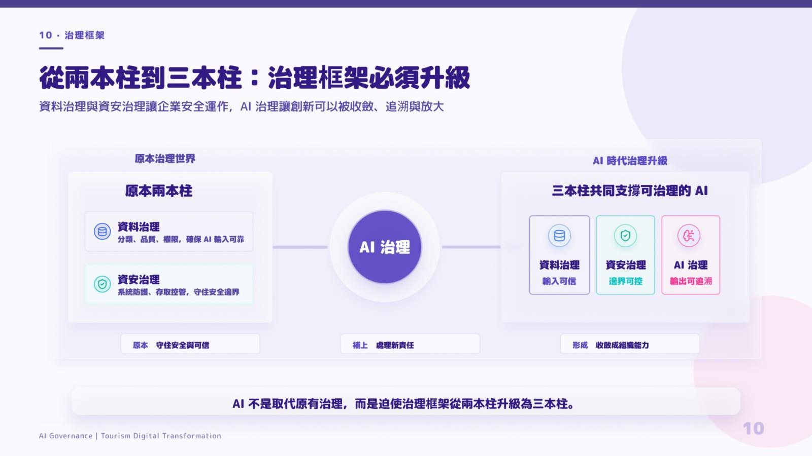
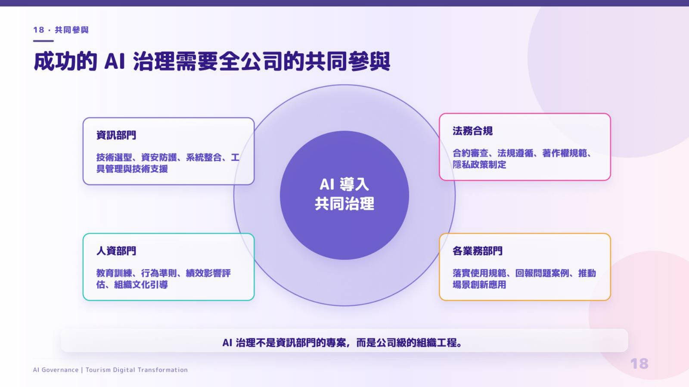

摘要
本演講分享旅遊業者在數位轉型進程中，如何克服傳統單一化經營、資訊孤島與跨部門協作不足的核心挑戰，順利過渡到 AI 驅動的智慧創新階段。演講核心提出將轉型框架從「兩本柱」升級為「三本柱」架構，以納入 AI 的系統化規劃。在組織設計上，倡導「共同治理」（Co-governance）模式，串聯業務、技術、合規等跨部門角色，健全 AI 專案的安全評估與敏捷落地。實戰應用聚焦於顧客服務體驗個人化、旅遊行程排程自動化與數據驅動決策，為傳統旅遊服務業提供了從數位轉型走向智慧化、規模化 AI 創新的轉型藍圖與治理實踐路徑。
重點整理
- 旅遊業轉型框架由「兩本柱」擴展為「三本柱」，反映企業數位轉型策略隨 AI 導入而演進
- 提出「共同治理」模式作為推動 AI 落地的組織治理方式
- 轉型聚焦顧客體驗、營運效率與資料驅動決策等旅遊產業關鍵面向
- 反映旅遊業者在 AI 浪潮下，從單純數位化走向以 AI 驅動業務創新的階段性歷程
重點圖片／架構圖


從兩本柱到三本柱的轉型框架
講題說明企業原本以兩大支柱作為數位轉型框架，隨著 AI 技術與應用的成熟，進一步擴展為三本柱的轉型架構。這樣的演進反映旅遊業者體認到，僅靠既有的兩項轉型支柱已不足以涵蓋 AI 導入後的新需求，需要新增第三個支柱來完整支撐企業從數位化邁向智慧化的轉型路徑。
共同治理：AI 導入的組織模式
講者提出「共同治理」作為推動 AI 在旅遊業務中導入與落地的治理模式，強調 AI 導入並非單一部門或單一團隊可獨力完成，而需要跨部門、跨層級的協作與共同決策機制，確保 AI 專案能兼顧業務需求、技術可行性與風險控管，逐步在企業內部建立起可長期運作的 AI 治理架構。
旅遊業智慧轉型的應用面向
整體轉型歷程圍繞顧客體驗、營運效率與資料驅動決策等旅遊產業的核心關鍵面向展開，展現旅遊業者如何運用數位轉型累積的基礎，進一步導入 AI 技術強化服務品質與內部營運效能，逐步邁向智慧化的旅遊產業經營模式。